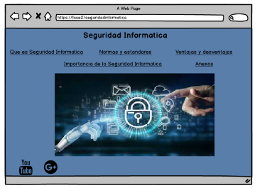
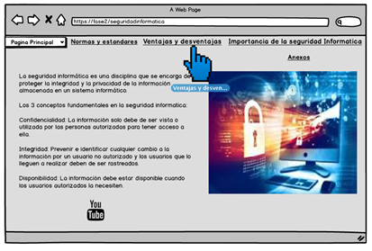
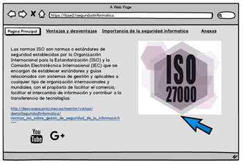
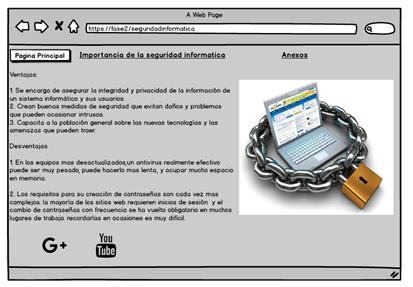
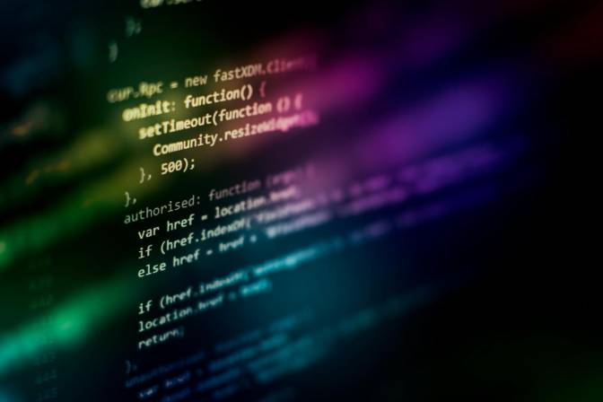

Proyecto de Seguridad Informatica - Mockup - Diseño desarrollado en Balsamiq, tematica Seguridad Informatica, todo lo desarrollado
es de autoria propia.




Como inicio se escogió el tema para crear la maquetación del OVI (seguridad informática), en él se podrá encontrar en cada sección los temas de:
los conceptos básicos, las normas y estándares, la importancia y las ventajas y desventajas que tiene la seguridad informática tanto para las
empresas como en lo personal, en cada sección se explica detalladamente cada tema y nos da la opción de ver videos instructivos e indagar en
Google, con la investigación autónoma y el desarrollo de la maquetación desarrollamos mas conocimiento sobre el manejo y la creación de bocetos
y prototipos, siempre investigando, profundizando más y más siempre para nuestro beneficio ya que esta es una de las temáticas fundamentales
para poder formarnos como profesionales con conocimiento y práctica.
A continuacion se encuentran varias lecturas, todas con relación a la tematica trabajada. Es muy importante que cada una de las lecturas se
realizen para complementar y por ende adquirir mas conocimiento de manera autonoma. Este es un tema el cual abarca muchas definiciones y es
fundamental para nuestro desarrollo profesional.
¿Porque es importante la seguridad informatica en las empresas?
La información es uno de los recursos mas importantes que hay en las empresas, esta se encarga de conectar las distintas áreas, unifican y guían la productividad de la empresa llevando por la dirección correcta. Es por ello que la seguridad informática es fundamental en una empresa ya que protege la información de la manera más adecuada.
La seguridad informática en las empresas evitar la utilización maliciosa de la información privada y de los recursos internos, lo que lleva a una infinidad de consecuencias. Estos ciberataques no sólo afectan a clientes o inversores de dichas compañías, sino que pueden llegar a afectar a la seguridad nacional o regional de los distintos estados además de la propia empresa.
En la actualidad, para que se realice el uso correcto de la información empresarial, las organizaciones cuentan con un área que se encarga única y exclusivamente a proteger la información en general de la empresa previniendo posibles ciberataques que roben información valiosa.
Ventajas
* Capacita a la población general, sobre las nuevas tecnologías y amenazas que puedan traer.
* Asegura la integridad y privacidad de la información de un sistema informático y sus usuarios.
* Crea barreras de seguridad que no son más que técnicas, aplicaciones y dispositivos de seguridad, como corta juegos, antivirus, anti espías, encriptación de la información y uso de contraseñas protegiendo información y equipos de los usuarios.
* Medidas de seguridad que evitan daños y problemas que pueden ocasionar intrusos.
Desventajas
* En los equipos de cómputo más desactualizados un antivirus realmente efectivo puede ser muy pesad, puede hacerlos más lentos y ocupar mucho espacio en memoria.
* La seguridad absoluta es imposible y la seguridad informática es un conjunto de técnicas encaminadas a obtener altos niveles de seguridad en los sistemas informáticos.
* Los requisitos para la creación de contraseñas son cada vez más complejos, la mayoría de los sitios web requieren inicio de sesión, y el cambio de contraseñas con frecuencia se ha vuelto obligatorio en muchos lugares de trabajo, recordarlas en ocasiones es muy difícil.
Como tener un sistema de seguridad seguro
* Contar con un buen antivirus que nos garantice protección.
* Capacitación de los usuarios: formar a los usuarios de los sistemas de seguridad informática en materia de ciberseguridad.
* Mantener actualizado el software.
* Prestar atención a las contraseñas.
* Realizar auditorías de software.
* Posibilidad de contratar un ciberseguro.
Las 5 tendencias de ciberseguridad para el 2020

- La Inteligencia Artificial es una herramienta de lucha contra los ataques cibernéticos, pero también puede crearlos
- La expansión del IoT requiere que las cadenas de suministro tengan una protección colaborativa
- Garantizar la flexibilidad laboral con mayor seguridad en la nube
- Aumento de la identidad basada en Zero Trust = muerte de las contraseñas
- A mayor actividad del Estado, mayores alteraciones políticas y sociales.
Lecturas adicionales sobre la tematica
Seguridad Informatica
Politicas de Seguridad Informatica
Introduccion a la Seguridad Informatica
Redes Seguras
Analisis de amenazas
Referencias Bibliograficas de las lecturas
Buendía, J. F. R. (2013). Seguridad informática. McGraw-Hill España.
Clavijo, C. A. D. (2006). Políticas de seguridad informática. Entramado, 2(1), 86-92.
López, P. A. (2010). Seguridad informática. Editex.
Aguilera, P. (2011). Redes seguras (Seguridad informática). Editex.
Rascagneres, P. (2016). Seguridad informática y malwares: análisis de amenazas e implementación de contramedidas. Ediciones ENI.